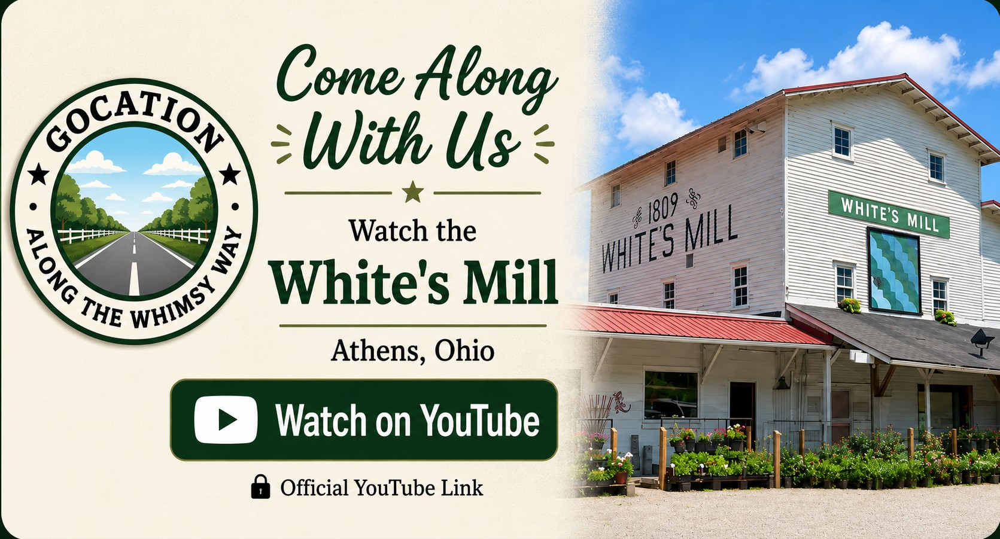

White's Mill
A quiet stop in historic Athens, Ohio, where the past still stands beside the flowing water.

Our Visit
While exploring Athens, we stopped at historic White's Mill, another reminder that Ohio's history is often found just off the main road.
The mill, creek, and surrounding scenery made this a peaceful place to slow down and appreciate one of the area's historic landmarks.
These are the kinds of unexpected discoveries that make every GO-CA-TION memorable.
A Little History
White's Mill has been part of the Athens community for generations and reflects the important role mills played in the development of Ohio's early settlements.
Water-powered mills once served as the center of many rural communities, providing essential services while helping local towns grow and prosper.
Today, White's Mill remains a reminder of Ohio's milling heritage and the communities that grew around it.
Come Along With Us
Watch the White's Mill.

Nearby Discoveries
Athens and southeastern Ohio are filled with scenic drives, historic sites, covered bridges, and quiet places waiting to be explored.
As GO-CA-TION grows, this page will connect with more nearby adventures throughout the region.